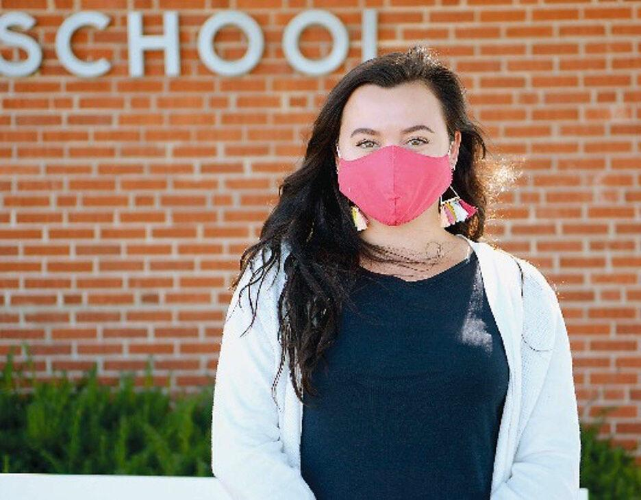

Maggie Robbins was actually starting to enjoy teaching online.
The kindergarten teacher spent the beginning of last week planning virtual lessons and creating ways to get kids talking via Zoom — during meet a friend week, for instance, when students have permission to chat with classmates via Zoom.
But after the Columbia School Board’s vote to send preschoolers through fifth-graders into school buildings starting Monday, she’s shifting strategies — again.
Robbins is sanitizing and reconsidering lesson plans to teach the way she and other newly licensed teachers likely envisioned: in an actual classroom.
In some ways, it will literally look different. Robbins will head into Rock Bridge Elementary School wearing a mask and armed with hand sanitizer. Her 15 students — also wearing masks — will be seated 3 feet apart.
But finally, they all will be together.
“I’m super excited to see my students,” Robbins said.
She is one of 3,000 Missouri teachers certified during the pandemic who missed hours of in-person instruction when schools closed in March as COVID-19 spread.
They began their teaching careers on a new platform that brought new challenges amid a pandemic that brought others.
Many district teachers, regardless of the level of experience, felt overwhelmed by the quick ramp-up to in-person learning, said Kathy Steinhoff, president of the Columbia Missouri National Education Association. The organization represents some district teachers in contract negotiations.
Steinhoff also said some teachers are nervous about the potential health risks.
Brown University data from school administrators shows low levels of infection among teachers and students.
Steinhoff described the preparation for students as “an all hands on deck thing.”
It’s seemingly an apt description of the way Robbins and her cohorts have been supported in recent months, as hundreds of educators at the state and local level collaborated to compensate for the hours of classroom instruction and assessments usually necessary for state certification.
Robbins plans to use those skills and the additional support whether in the classroom or should the need arise to return to virtual teaching.
“It seems like this would be a bad year to be a first-year teacher,” Robbins said before Monday’s vote. “But to be quite honest, I feel like it gives us a lot more resilience because we’re already coming in with the challenge of being a first-year teacher but then we’re also coming in with the challenge of having our actual student teaching experience cut short in the classroom.”
Robbins and the other newly-minted teachers lack training in what Paul Katnik, assistant commissioner in the Office of Educator Quality, with the Missouri Department of Elementary and Secondary Education (DESE) called the “three big areas” that involve recognizing learning differences, encouraging student problem solving and using assessments to change lesson plans.
They also missed assessments typically taken before new teachers are certified.
The state waived the requirements this year at DESE’s request.
DESE tapped experienced teachers to create a new curriculum and expanded the state-required Beginning Teacher Assistance Program, which provides mentors for first- and second-year educators.
Robbins said she relied on her mentor, 16-year veteran teacher Carm Veros “for literally everything,” before classes were slated to resume in person.
That’s not likely to change as both teachers welcome their students into class Monday morning, since classroom management and communication with parents are the things Robbins relies on her mentor for most.
Veros said that the support goes both ways.
“I try to be her support and guide her along … but really it’s a team effort,” Veros said before the board made its decision.
Robbins said teaching online made it especially difficult to track student growth.
“My mentor teacher and I had to change our thinking of how we were looking at (student growth),” Robbins said. “We essentially had to start over.”
In some ways — whether assessment strategies or classroom management — they face starting from scratch again Monday.
As Robbins and other teachers transition, student teachers will continue teaching virtually.
Tess Phillips, a senior at MU, will have to complete all of the final performance and content assessments that were in place before COVID-19 if she plans to be a certified teacher next year.
Phillips has made an effort to get as much experience with elementary-age kids as possible through after school programs in addition to her virtual classes.
Much like Robbins, Phillips has formed a community with her mentor teachers.
She said this online experience has made her feel more supported by the education community than she has in the past.
“I definitely feel heard in the community,” Phillips said. “I feel like (COVID-19 has) amplified how important ... we are.”
The resources Robbins has received from both the state and district alike give her the ability to adapt to changing circumstances in her classroom.
Though that may invite a new set of challenges — like making sure kindergarteners keep their mask on — she plans to approach the transition with optimism.
“Grace and flexibility are like the words of the year,” Robbins said. “I’m glad I see your face. I’m glad you’re here.”